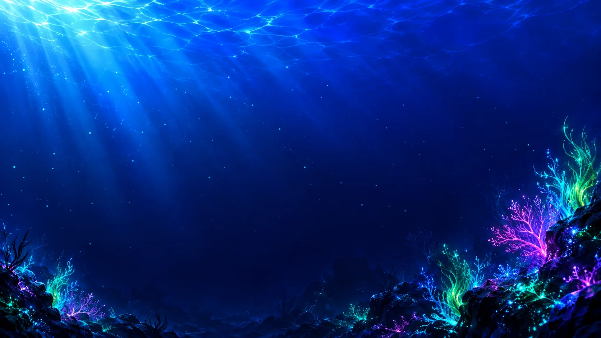
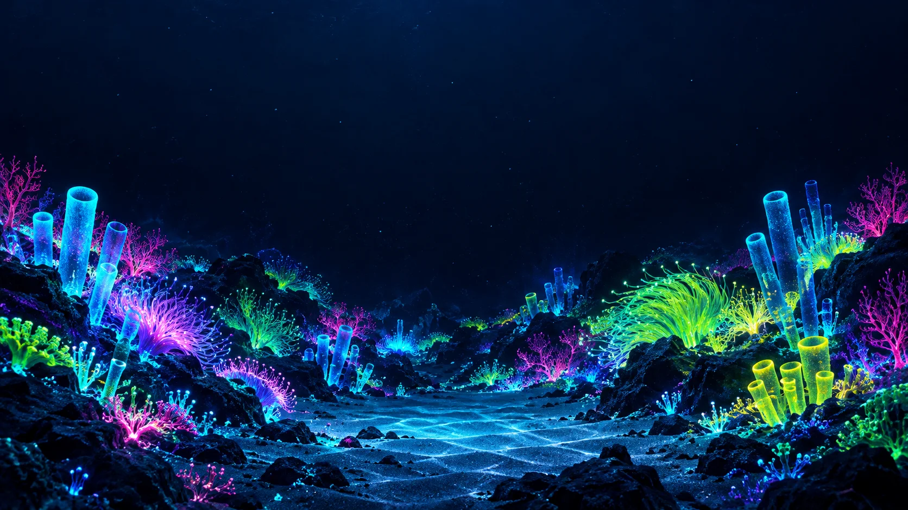

Desarrollador Full Stack · IA en producción · agentes de IA
Fernando Martínez
Hago productos web que la gente usa de verdad: juegos diarios, una web de noticias, calculadoras que cuadran al céntimo e integraciones con Odoo. De la idea a producción.
Cada criatura es un proyecto. Pesca una y te llevas su carta.
−100 m · el álbum
Las ocho especies
Todas las cartas, las hayas pescado o no. El foil dice qué tipo de prueba es cada una y el reverso trae las preguntas que me harías en una entrevista, con su respuesta.
−400 m · trayecto
Por dónde he pasado
−700 m · bancos
Con qué trabajo
Lo que uso cada semana, agrupado. La IA es una herramienta más del banco: la uso a diario y reviso todo lo que propone.

−1.100 m · el fondo
Has llegado al fondo.
¿Hablamos?
Busco equipo como desarrollador full stack, en Marbella o en remoto. Respondo en menos de un día.